정보처리기사(구) (2005-03-20 기출문제)
1과목: 데이터 베이스
1. 시스템 카탈로그에 대한 설명으로 옳지 않은 것은?
- 시스템 카탈로그는 테이블 정보, 인덱스 정보, 뷰 정보 등을 저장하는 시스템 테이블이다.
- 시스템 카탈로그는 DBMS가 스스로 생성하고 유지하는 데이터베이스 내의 특별한 테이블이다.
- 시스템 카탈로그에는 사용자의 접근이 허락되지 않는다.
- 시스템 카탈로그에 대한 갱신은 DBMS가 자동적으로 수행한다.
(정답률: 78%)

2. DBA의 역할로 거리가 먼 것은?
- 자료의 보안성, 무결성 유지
- 스키마의 정의
- 응용 프로그램의 설계 및 개발
- 데이터 사전의 유지 및 관리
(정답률: 78%)
3. 관계 데이터 모델에서 하나의 애트리뷰트가 취할 수 있는 같은 타입의 원자(atomic) 값들의 집합을 의미하는 것은?
- 속성
- 스킴
- 도메인
- 제약조건
(정답률: 66%)
4. 데이터베이스에 저장된 데이터에 대한 설명으로 부적합한 것은?
- 통합(integrated) 데이터
- 운영(operational) 데이터
- 저장(stored) 데이터
- 독점(exclusive) 데이터
(정답률: 86%)
5. 분산 시스템의 장점으로 거리가 먼 것은?
- 지역 자치성
- 점진적 시스템 용량 확장
- 소프트웨어 개발 비용 절감
- 신뢰성과 가용성
(정답률: 78%)
6. 삽입과 삭제가 양쪽 끝에서 이루어지므로 2개의 포인터 END1과 END2를 사용하는 선형 자료구조는?
- 스택(Stack)
- 데크(Deque)
- 리스트(List)
- 그래프(Graph)
(정답률: 74%)
7. 스택 알고리즘에서 T가 스택 포인터이고, m이 스택의 길이일 때, 서브루틴 AA가 처리해야 하는 것은?
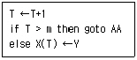
- 오버플로 처리
- 언더플로 처리
- 입력 처리
- 출력 처리
(정답률: 82%)
8. which of the following describes the internal schema?
- It describes the structure of the whole database for a community of users.
- It describes physical storage structure of the database.
- It describes the database view of one group of database users.
- A high-level data model or an implementation data model can be used at this level.
(정답률: 62%)
9. 다음과 같은 전위식(prefix)을 후위식(postfix)으로 올바르게 표현한 것은?
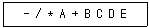
- A B C + * D / E -
- A B * C D / + E -
- A B * C + D / E -
- A B C + D / * E -
(정답률: 54%)
10. 뷰(view)에 대한 설명으로 옳지 않은 것은?
- 뷰는 creat view 명령을 사용하여 정의한다.
- 뷰는 일반적인 ALTER 문으로 변경할 수 없다.
- 뷰를 제거할 때는 DROP 문을 사용한다.
- 뷰에 대한 검색은 일반 테이블과는 다르다.
(정답률: 64%)
11. 릴레이션 R(A,B,C,D)에서 기본키가 (A,B)이고 D -> B 의 종속성이 존재한다. 릴레이션 R은 몇 정규형인가?(문제 오류로 실제 시험에서 모두 정답 처리한 문제입니다. 여기서는 1번을 정답 처리 합니다.)
- BCNF
- 3NF
- 2NF
- 1NF
(정답률: 83%)
12. 응용 프로그램이나 사용자들이 필요로 하는 자료를 통합해 놓은 것으로 범기관적 입장에서 본 조직 전체의 데이터베이스를 기술한 것은?
- 개념(Conceptual) 스키마
- 내부(Internal) 스키마
- 외부(External) 스키마
- 사용자(User) 스키마
(정답률: 65%)
13. 다음의 빈칸에 적합한 단어는 무엇인가?
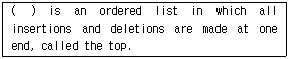
- A queue
- A dequeue
- A stack
- A linked list
(정답률: 76%)
14. 트랜잭션의 성질이 아닌 것은?
- 각 트랜잭션은 단독으로 수행되었을 때 데이터베이스의 일관성을 보전해 주어야 한다.
- 성능상의 이유로 DBMS가 트랜잭션의 단위 작업을 섞어서 수행시키는 경우에라도 사용자들은 트랜잭션이 다른 트랜잭션으로부터 영향을 받는다고 느껴야 한다.
- 일단 DBMS가 사용자에게 트랜잭션의 성공적인 완료를 응답했다면 설사 해당 변경 내용이 디스크 상에 반영되기 전에 시스템의 장애가 일어나도 트랜잭션 완료의 효과는 지속되어야 한다.
- 각 트랜잭션의 실행을 사용자들이 원자적(atomic)인 것으로 간주할 수 있도록 한다.
(정답률: 73%)
15. 트리(tree)에서 임의의 노드 N 에 연결된 다음 레벨(level)의 노드를 무엇이라고 하는가?
- Parent node
- Brother node
- Leaf node
- Children node
(정답률: 70%)
16. 데이터베이스의 논리적 설계(logical design) 범주에 속하지 않는 것은?
- 논리적 데이터 모델링
- 트랜잭션의 인터페이스 설계
- 스키마의 평가
- 저장 레코드의 양식 설계
(정답률: 53%)
17. 데이터베이스 생명 주기 단계 중 목표 DBMS에 맞는 스키마를 정의하고, 응용 프로그램을 작성하는 단계는?
- 요구조건 분석
- 설계
- 구현
- 운영
(정답률: 52%)
18. 트랜잭션 T1, T2 에 대해 T1이 T2의 갱신을 볼 수 있고 또는 T2가 T1의 갱신을 볼 수 있으나, 두 트랜잭션이 동시에 상대방의 갱신을 볼 수 없는 트랜잭션의 성질(properties)은?
- 원자성(Atomicity)
- 독립성(Isolation)
- 일관성(Consistency)
- 지속성(Durability)
(정답률: 75%)
19. 다음 표와 같은 성적 테이블을 읽어 학생별 점수평균을 얻고자 한다. 가장 알맞은 SQL 구문은?
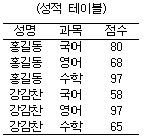
- SELECT 성명, SUM(점수) FROM 성적 ORDER BY 성명
- SELECT 성명, AVG(점수) FROM 성적 ORDER BY 성명
- SELECT 성명, SUM(점수) FROM 성적 GROUP BY 성명
- SELECT 성명, AVG(점수) FROM 성적 GROUP BY 성명
(정답률: 66%)
20. 데이터베이스 관리 시스템(DBMS)의 주요 필수기능과 거리가 먼 것은?
- 데이터베이스 구조를 정의할 수 있는 정의 기능
- 데이터 사용자의 통제 및 보안 기능
- 데이터베이스 내용의 정확성과 안정성을 유지할 수 있는 제어기능
- 데이터 조작어로 데이터베이스를 조작할 수 있는 조작 기능
(정답률: 58%)
2과목: 전자 계산기 구조
21. 인터럽트 사이클을 위한 마이크로 연산이 아닌 것은?
- MAR←PC, PC←PC+1
- MBR(AD)←PC, PC←0
- M←MAR, IEN←0
- F←0, R←0
(정답률: 31%)
22. 보통 4K의 기억 용량을 갖는 코어 기억 장치는 엄밀히 말하여 몇 개 어의 기억 용량을 갖는가?
- 4,000개
- 4,⑤6개
- 4,096개
- 4,136개
(정답률: 74%)
23. 데이지 체인(Daisy chain)에 대한 설명 중 옳지 않은 것은?
- 인터럽트의 우선순위를 결정하기 위하여 직렬 연결한 하드웨어 회로이다.
- 벡터에 의한 인터럽트 처리 방법이다.
- 우선순위에 기초한 인터럽트 처리 방법이 아니다.
- 인터럽트 된 모든 장치들은 벡터를 동시에 보낼 수 있다.
(정답률: 50%)
24. indirect cycle 동안에 컴퓨터는 무엇을 하는가?
- 명령을 읽는다.
- 오퍼랜드(operand)를 읽는다.
- 인터럽트(interrupt)를 처리한다.
- 오퍼랜드(operand)의 어드레스(address)를 읽는다.
(정답률: 58%)
25. 보조 기억장치에 대한 설명으로 옳은 것은?
- 자기 테이프는 주소의 개념을 사용하지 않는 SASD이다.
- 자기 디스크의 디스크 접근시간은 탐색시간과 회전시간의 합으로만 나타낸다.
- 자기 드럼의 기억용량은 자기 디스크보다 크다.
- 자기 테이프는 random access가 가능하다.
(정답률: 40%)
26. 자기테이프 등과 같은 대 용량의 보조 기억장치의 내용을 직접 접근이 가능한 영역으로 이동하여 컴퓨터시스템에서 자료를 접근할 수 있도록 하는 기능을 무엇이라 하는가?
- saving
- storing
- staging
- spooling
(정답률: 43%)
27. BSA(Branch and Save return Address)의 마이크로 동작 중 시간 t0에서 발생하는 동작이 아닌 것은?(단, t0 는 sequencer 출력을 나타냄.)
- PC ← PC + 1
- MAR ← MBR(AD)
- MBR(AD) ← PC
- PC ← MBR(AD)
(정답률: 41%)
28. 플린(Flynn)이 분류한 병렬 컴퓨터 중에서 실제 사용되기 어려운 것은?
- SISD (Single Instruction stream Single Data stream)
- SIMD (Single Instruction stream Multiple Data stream)
- MISD (Multiple Instruction stream Single Data stream)
- MIMD(Multiple Instruction stream Multiple Data stream)
(정답률: 51%)
29. 기억장치에서 DRO(Destructive Read Out)의 성질을 갖고 있는 메모리는?
- 반도체 메모리
- 자기코어 메모리
- 자기디스크 메모리
- 자기테이프 메모리
(정답률: 50%)
30. 연산자 코드(operation code)의 기능이 아닌 것은?
- 입ㆍ출력 명령 수행
- 제어 명령 수행
- 유효 주소 지정 기능
- 산술 연산 명령 수행
(정답률: 54%)
31. 인터럽트를 종류 별로 구분하였을 때 정의되지 않은 명령이나 불법적인 명령을 사용했을 경우 혹은 보호되어 있는 기억공간에 접근하는 경우 발생하는 인터럽트를 무엇이라 하는가?
- Machine Check Interrupt
- Use Bad Command Interrupt
- Input-Output Interrupt
- External Interrupt
(정답률: 58%)
32. 부동 소수점 연산에 대한 설명으로 옳지 않은 것은?
- 부동 소수점 수에 대한 가감산의 경우 먼저 두 수의 지수부가 같도록 소수점의 위치를 조정해야 한다.
- 부동 소수점 수의 연산은 고정 소수점 수의 연산에 비해 단순하며 계산속도 역시 빠르게 처리된다.
- 부동 소수점 수의 연산에서 승제산의 경우 지수부와 가수부를 별도로 처리해야 하며 경우에 따라 계산 결과를 정규화 시켜야 한다.
- 부동 소수점 수의 연산에서 승산의 경우 지수부는 더하고 가수부는 곱해야 한다.
(정답률: 47%)
33. 다음은 인터럽트 체제의 동작을 나열하였다. 수행 순서를 올바르게 표현한 것은?
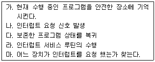
- 나→마→가→라→다
- 나→가→라→마→다
- 나→라→가→마→다
- 나→가→마→라→다
(정답률: 67%)
34. 2진수 0011에서 2의 보수(2's complement)는?
- 1100
- 1110
- 1101
- 0111
(정답률: 69%)
35. 메이저 상태(major state)에 대한 설명 중 옳은 것은?
- execute state가 끝나면 항상 fetch state로 간다.
- 특정한 명령에 대해서는 indirect state가 필요하다.
- 메이저 사이클은 fetch, indirect, execute, interrupt 과정을 반드시 수행해야 한다.
- indirect state는 데이터의 유효번지를 얻기 위해 기억장치에 접근하는 상태이다.
(정답률: 42%)
36. 컴퓨터의 메모리 용량이 16K ×32bit라 하면 MAR(Memory Address Register)와 MBR(Memory Buffer Register)은 각각 몇 비트인가?
- MAR:12, MBR:16
- MAR:32, MBR:14
- MAR:12, MBR:32
- MAR:14, MBR:32
(정답률: 51%)
37. 레지스터 가운데 명령어를 수행 할 때마다 결과가 0인지 여부, 부호(음수인지 양수인지), 캐리 및 오버플로의 발생 여부 등을 각각 1비트로 나타내며 분기를 결정하는 중요한 역할을 하는 레지스터는?
- 카운터 레지스터
- 플래그 레지스터
- 인덱스 레지스터
- 주소 레지스터
(정답률: 60%)
38. 인스트럭션 세트의 효율성을 높이기 위하여 고려할 사항이 아닌 것은?
- 기억공간
- 레지스터의 종류
- 사용빈도
- 주기억장치 밴드폭 이용
(정답률: 50%)
39. I/O 인터페이스 실행 Command 종류가 아닌 것은?
- 제어 Command
- 메모리 Command
- 데이터 출력 Command
- 데이터 입력 Command
(정답률: 63%)
40. 연관기억(Associative Memory) 장치에 대한 설명 중 옳지 않은 것은?
- 고속 메모리에 속한다.
- Mapping Table 구성에 주로 사용된다.
- 주소에 접근하지 않고 기억된 내용의 일부를 이용할 수 있다.
- CPU의 속도와 메모리의 속도 차이를 줄이기 위해 사용되는 고속 Buffer Memory이다.
(정답률: 52%)
3과목: 운영체제
41. 너무 자주 페이지 교환이 발생하여 어떤 프로세스가 프로그램 수행에 소요되는 시간보다 페이지 교환에 소요되는 시간이 더 많은 경우를 무엇이라고 하는가?
- locality
- thrashing
- working set
- pre-paging
(정답률: 77%)
42. 운영체제의 목적으로 거리가 먼 것은?
- 사용자 인터페이스 제공
- 주변 장치 관리
- 데이터 압축 및 복원
- 신뢰성 향상
(정답률: 70%)
43. 사용자가 요청한 디스크 입, 출력 내용이 다음과 같은 순서로 큐에 들어 있다. 이 때 SSTF 스케쥴링을 사용한 경우의 처리 순서는?(단, 현재 헤드 위치는 53 이고, 제일 안쪽이 1번, 바깥쪽이 200번 트랙이다.)
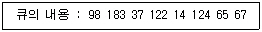
- 53-65-67-37-14-98-122-124-183
- 53-98-183-37-122-14-124-65-67
- 53-37-14-65-67-98-122-124-183
- 53-67-65-124-14-122-37-183-98
(정답률: 66%)
44. UNIX 운영체제의 특징과 가장 거리가 먼 것은?
- 높은 이식성
- 파일 시스템의 리스트 구조
- 사용자 위주의 시스템 명령어 제공
- 쉘 명령어 프로그램 제공
(정답률: 62%)
45. UNIX 파일 시스템의 블록구조에 포함되지 않는 것은?
- 사용자 블록(USER BLOCK)
- 부트 블록(BOOT BLOCK)
- INODE 리스트
- 슈퍼(SUPER) 블록
(정답률: 52%)
46. 다음과 같은 접근제어 행렬에 대한 설명 중 옳은 것은?
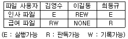
- 김영수는 인사와 급여파일을 판독하고 기록할 수 있다.
- 이길동은 인사와 급여파일을 읽을 수 있다.
- 최동규는 급여파일의 내용을 변경할 수 있다.
- 이길동은 인사파일에 대한 모든 권한을 가지고 있다.
(정답률: 80%)
47. 두개의 프로세스 간 선행순서를 Pi<Pj 로 표현할 경우 Pj 가 먼저 실행된다고 가정한다면, P2<P1, P4<P2, P4<P3의 선행관계가 있는 경우에 병행으로 실행될 수 있는 프로세스는?
- P1, P3
- P1, P4
- P2, P4
- P3, P4
(정답률: 62%)
48. 컴퓨터 자체 내의 기계적인 장애나 오류로 인하여 발생하는 인터럽트는?
- 입출력 인터럽트
- 외부 인터럽트
- 기계 검사 인터럽트
- 프로그램 검사 인터럽트
(정답률: 58%)
49. 페이지 교체 기법 중 매 페이지마다 두개의 하드웨어 비트가 필요한 기법은?
- FIFO
- LRU
- LFU
- NUR
(정답률: 60%)
50. 기억 장치 관리에서 60K의 사용자 공간이 아래와 같이 분할되어 있다고 가정할 때 24K, 14K, 12K, 6K의 작업을 최적적합(best-fit) 전략으로 각각 기억 공간에 들어온 순서대로 할당할 경우 생기는 총 내부 단편화(internal fragmentation)의 크기와 외부단편화(external fragmentation)의 크기는 얼마인가?
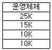
- 내부 단편화 4K, 외부 단편화 6K
- 내부 단편화 6K, 외부 단편화 8K
- 내부 단편화 6K, 외부 단편화 10K
- 내부 단편화 4K, 외부 단편화 12K
(정답률: 55%)
51. UNIX 특징을 설명한 것중 틀린 것은?
- 대화식 시분할 체제이다.
- 하나 이상의 작업을 백그라운드에서 수행할 수 있으므로 대화식 시스템이라고 부르기도 한다.
- 동시에 여러 가지 작업을 수행하는 다중 테스킹 운영체제이다.
- 다중 사용자 운영체제로 두 사람 이상의 사용자가 동시에 시스템을 사용할 수 있다.
(정답률: 29%)
52. 다음의 운영체제 형태 중 시대적으로 가장 먼저 생겨난 방식은?
- 다중프로그래밍 시스템
- 시분할 시스템
- 일괄처리 시스템
- 분산처리 시스템
(정답률: 79%)
53. 분산 처리 시스템과 관련이 없는 설명은?
- 분산된 노드들은 통신 네트워크를 이용하여 메시지를 주고받음으로서 정보를 교환한다.
- 사용자에게 동적으로 할당할 수 있는 일반적인 자원들 이 각 노드에 분산되어 있다.
- 시스템 전체의 정책을 결정하는 어떤 통합적인 제어 기능은 필요하지 않다.
- 사용자는 특정 자원의 물리적 위치를 알지 못하여도 사용할 수 있다.
(정답률: 70%)
54. 순차 파일에 대한 설명으로 틀린 것은?
- 적합한 기억 매체로는 자기 테이프를 쓰면 편리하다.
- 필요한 레코드를 삽입하는 경우 파일 전체를 복사할 필요가 없다.
- 기억장치의 효율이 높다.
- 검색시에 효율이 나쁘다.
(정답률: 60%)
55. 분산 운영체제의 개념 중 강결합 시스템(TIGHTLY -COUPLED)의 설명으로 틀린 것은?
- 프로세스간의 통신은 공유메모리를 이용한다.
- 여러 처리기들 간에 하나의 저장장치를 공유한다.
- 메모리에 대한 프로세스 간의 경쟁 최소화가 고려되어야 한다.
- 각 사이트는 자신만의 독립된 운영체제와 주기억장치를 갖는다.
(정답률: 65%)
56. 디스크 스케쥴링 기법 중 다음의 특징을 갖는 기법은?
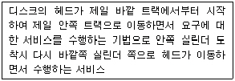
- FCFS(FIRST COME FIRST SERVICE)
- SSTF(SHORTEST SEEK TIME FIRST)
- SCAN
- LRU(LEAST RECENTLY USED)
(정답률: 65%)
57. 실행 중인 프로세스가 CPU 할당시간을 다 사용한 후 어떤 상태로 전이하는가?
- ready 상태
- running 상태
- block 상태
- suspended 상태
(정답률: 57%)
58. 스케줄링 알고리즘의 성능평가 기준이 아닌 것은?
- 반환시간
- 대기시간
- CPU 사용률
- 버퍼링
(정답률: 57%)
59. 교착상태의 예방 기법 중 각 프로세스는 한꺼번에 자기에게 필요한 자원을 모두 요구해야 하며, 이 요구가 만족되지 않으면 작업을 진행할 수 없게 하는 방법이 있다. 이것은 다음 중 무슨 조건을 방지하기 위함인가?
- 비선점(non preemption) 조건
- 점유 및 대기(hold & wait) 조건
- 순환대기(circular wait) 조건
- 상호배제(mutual exclusion) 조건
(정답률: 56%)
60. 중앙 컴퓨터와 직접 연결되어 응답이 빠르고 통신비용이 적게 소요되지만, 중앙 컴퓨터에 장애가 발생되면 전체 시스템이 마비되는 분산 시스템의 위상 구조는?
- 완전연결(fully connected) 구조
- 성형(star) 구조
- 계층(hierarchy) 구조
- 환형(ring) 구조
(정답률: 74%)
4과목: 소프트웨어 공학
61. CASE에 대한 설명으로 옳지 않은 것은?
- 소프트웨어의 개발과정을 자동화함으로써 생산성을 증대시키고자 하는 목적으로 개발되었다.
- CASE는 소프트웨어 개발의 모든 단계에 걸쳐 일관된 방법론을 지원한다.
- CASE를 사용함으로 개발의 표준화를 지향하고 자동화의 이점을 얻을 수 있다.
- CASE는 시스템의 개발속도를 빠르게 하지만 재사용성은 떨어진다.
(정답률: 74%)
62. 객체지향 프로그램의 장점으로 거리가 먼 것은?
- 자연적인 모델링이 가능하다.
- 실행속도가 빨라진다.
- 소프트웨어의 재사용 율이 높아진다.
- 소프트웨어의 유지보수성이 향상된다.
(정답률: 47%)
63. 소프트웨어의 재사용(reusability)에 대한 효과와 거리가 먼 것은?
- 사용자의 책임과 권한부여
- 소프트웨어의 품질향상
- 생산성 향상
- 구축 방법에 대한 지식의 공유
(정답률: 71%)
64. 나씨-슈나이더만(Nassi-Schneiderman) 도표는 구조적 프로그램을 표현하기 위해 고안되었다. 이 방법에서 알고리즘의 제어구조는 3가지로 충분히 표현될 수 있는데, 이에 해당하지 않는 것은?
- 선택, 다중선택(if ∼ then ∼ else, case)
- 반복(repeat ∼ until, while, for)
- 분기(goto, return)
- 순차(sequential)
(정답률: 53%)
65. 소프트웨어 개발시 위험요소가 아닌 것은?
- 인력부족
- 유지보수
- 예산부족
- 요구변경
(정답률: 59%)
66. 프로젝트 추진 과정에서 예상되는 각종 돌발 상황을 미리 예상하고 이에 대한 적절한 대책을 수립하는 일련의 활동을 무엇이라고 하는가?
- 위험관리
- 일정관리
- 코드관리
- 모형관리
(정답률: 84%)
67. 모듈 결합도(Coupling)에 관한 설명으로 옳지 않은 것은?
- 자료결합(Data Coupling) - 모듈간의 인터페이스가 자료요소로만 구성된 경우
- 스탬프결합(Stamp Coupling) - 모듈간의 인터페이스로 배열이나 레코드 등의 자료구조가 전달된 경우
- 내용결합(Content Coupling) - 한 모듈이 다른 모듈의 일부분을 참조 또는 수정하는 경우
- 제어결합(Control Coupling) - 한 모듈이 다른 모듈에게 제어요소를 전달하고 여러 모듈이 공통 자료영역을 사용하는 경우
(정답률: 33%)
68. 소프트웨어 생명 주기의 전체 단계를 연결시켜 주고 자동화시켜 주는 통합된 도구를 제공해 주는 기술에 해당되는 것은?
- UIMS
- CASE
- OOD
- SADT
(정답률: 82%)
69. Rumbaugh의 객체 모델링 기법(OMT)에서 사용하는 세 가지 모델링이 아닌 것은?
- 객체 모델링(object modeling)
- 정적 모델링(static modeling)
- 동적 모델링(dynamic modeling)
- 기능 모델링(functional modeling)
(정답률: 69%)
70. 소프트웨어 공학에 대한 가장 적절한 설명은?
- 소프트웨어 위기(software crisis)를 완전히 해결한 공학적 원리의 체계이다.
- 신뢰성 있는 소프트웨어를 만들기 위한 도구만을 연구하는 학문이다.
- 가장 경제적으로 신뢰도 높은 소프트웨어를 만들기 위한 방법, 도구와 절차들의 체계이다.
- 점차 많은 비용이 소요되는 소프트웨어 개발에서 가장 경제적인 방법을 찾고자 하는 것이다.
(정답률: 65%)
71. 소프트웨어의 시험 중 화이트박스 시험의 과정이 아닌 것은?
- 조건 테스트
- 모든 실행문 테스트
- 경계 값 분석
- 분기점 테스트
(정답률: 51%)
72. 소프트웨어 수명주기 모형 중 프로토타이핑 모형(prototyping model)의 가장 큰 장점은?
- 위험요소가 쉽게 발견된다.
- 유지보수가 쉬워진다.
- 사용자 요구사항을 정확하게 파악할 수 있다.
- 소프트웨어 개발 일정을 정확하게 수립할 수 있다.
(정답률: 74%)
73. 소프트웨어 품질목표에 대한 설명으로 옳지 않은 것은?
- 신뢰성(reliability) : 정확하고 일관된 결과를 얻기 위해 요구된 기능을 수행하는 정도
- 이식성(portability) : 다양한 하드웨어 환경에서도 운용 가능하도록 쉽게 수정될 수 있는 정도
- 상호운용성(interoperability) : 다른 소프트웨어와 정보를 교환할 수 있는 정도
- 사용용이성(usability) : 전체나 일부 소프트웨어가 다른 응용 목적으로 사용될 수 있는 정도
(정답률: 60%)
74. 시스템 개발을 위한 첫 단계는 사용자의 요구나 현재의 시스템에 대한 분석이라고 할 수 있다. 이 중 사용자의 요구 분석을 위해 주로 사용하는 기법이 아닌 것은?
- 사용자 면접
- 현재 사용 중인 각종 문서 검토
- 설문 조사를 통한 의견 수렴
- 통제 및 보안 분석
(정답률: 72%)
75. 소프트웨어 프로젝트 관리에 중요한 영향을 주는 3대 요소는?
- 사람, 문제, 프로세스
- 문제, 프로젝트, 작업
- 사람, 문제, 도구
- 작업, 문제, 도구
(정답률: 81%)
76. 데이터 흐름도(DFD)의 구성요소에 포함되지 않는 것은?
- 처리공정(process)
- 자료흐름(data flow)
- 자료사전(data dictionary)
- 자료저장소(data store)
(정답률: 66%)
77. 소프트웨어 형상관리(Software Configuration-Management)의 설명으로 가장 적합한 것은?
- 소프트웨어 개발과정을 문서화하는 것이다.
- 하나의 작업 산출물을 정해진 시간 내에 작성하도록 하는 관리이다.
- 수행결과의 완전성을 점검하고 프로젝트의 성과 평가척도를 준비하는 작업이다.
- 소프트웨어의 생산물을 확인하고 소프트웨어 통제, 변경 상태를 기록하고 보관하는 일련의 관리 작업이다.
(정답률: 66%)
78. 시스템의 설계 명세서를 바탕으로 모듈 단위의 코딩과 디버깅 및 단위 테스트가 이루어지는 소프트웨어 개발 단계는?
- 코딩
- 구현
- 테스트
- 프로그램 설계
(정답률: 50%)
79. 분석가(analyst)가 갖추어야 할 능력 중 가장 중요한 것은?
- 추상적인 개념을 파악하여 논리적인 구성요소로 분해할 수 있는 능력
- 서로 상반되고 모호한 정보로부터 필요한 사항을 수렴할 수 있는 능력
- 관련된 하드웨어와 소프트웨어에 관한 최신 기술
- 거시적 관점에서 세부적인 요소를 관찰할 수 있는 능력
(정답률: 36%)
80. 객체지향 개념에서 오퍼레이션(operation)은 무엇을 변화시키는가?
- 어트리뷰트(attribute)
- 클래스 (class)
- 오브젝트(object)
- 메시지(message)
(정답률: 30%)
5과목: 데이터 통신
81. 25개의 구간을 망형으로 연결하면 필요한 회선의 수는 몇 회선인가?
- 250
- 300
- 350
- 500
(정답률: 50%)
82. 적절한 전송 경로를 선택하고, 이 경로로 데이터를 전달하는 인터네트워킹(internetworking) 장비는?
- 리피터
- 허브
- 라우터
- 프로토콜
(정답률: 75%)
83. 10BASE 5 LAN에서 5가 나타내는 의미는?
- 전송 속도가 50[Mbps]이다.
- 50[Ω]의 특성 임피던스이다.
- 케이블의 길이는 최대 500[m]이다.
- 최대 500대의 스테이션을 연결할 수 있다.
(정답률: 42%)
84. 컴퓨터 통신에서 컴퓨터 상호 간 또는 컴퓨터와 단말기 간에 데이터를 송수신하기 위한 통신 규약은?
- 프로토콜(protocol)
- 채널 액세스(channel access)
- 네트워크 토폴로지(network topology)
- 터미널 인터페이스(terminal interface)
(정답률: 83%)
85. 다음 LAN의 네트워크 토폴로지는 어떤 형인가?
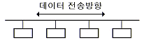
- 버스형
- 성형
- 링형
- 트리형
(정답률: 78%)
86. HDLC(High Data Link Control) frame 구성 순서는?
- 플래그→주소부→정보부→제어부→검사부→플래그
- 플래그→주소부→제어부→정보부→검사부→플래그
- 플래그→검사부→주소부→정보부→제어부→플래그
- 플래그→제어부→주소부→정보부→검사부→플래그
(정답률: 62%)
87. 4,800[bps]의 8 위상 편이변조방식 모뎀의 변조 속도는 몇 보오[baud]인가?
- 800
- 1,600
- 3,200
- 6,400
(정답률: 70%)
88. 전송제어문자의 내용을 기술한 것 중 옳지 않은 것은?
- STX : 본문의 개시 및 헤딩의 종료를 표시한다.
- SOH : 정보 메시지의 헤딩의 개시를 표현한다.
- ETX : 본문의 시작을 표시한다.
- SYN : 문자 동기를 유지한다.
(정답률: 62%)
89. 서비스, 응답, 경보 및 휴지 상태 복귀 신호 등의 기능을 수행하는 제어 신호는?
- 감시 제어 신호(supervisory control signal)
- 주소 제어 신호(address control signal)
- 호출 정보 제어 신호(call information control signal)
- 망 관리 제어 신호(communication management control signal)
(정답률: 41%)
90. X.25는 ITU-T 표준으로 호스트 시스템과 패킷 교환망간 인터페이스를 규정하고 있다. 이 기능에 포함되지 않는 것은?
- 링크 계층(link level)
- 패킷 계층(packet level)
- 물리 계층(physical level)
- 전송 계층(transport level)
(정답률: 43%)
91. 특정 다항식에 의한 연산 결과를 데이터에 삽입하여 전송하는 에러검출 방법은?
- 패리티 검사
- Block Sum검사
- 체크섬(Checksum)
- CRC(Cyclic Redundancy Check)
(정답률: 45%)
92. 아날로그 데이터 전송 방식 중에서 비트 전송률을 높이기 위해 각각의 벡터를 위상 변화뿐만 아니라 진폭 변화도 시키는 방식은?
- PSK(Phase Shift Keying)
- QAM(Quardrature Amplitude Modulation)
- FSK(Frequency Shift Keying)
- ASK(Amplitude Shift Keying)
(정답률: 54%)
93. OSI 프로토콜 구조 모델 7계층에 해당되지 않는 것은?
- Application
- Data link
- Network
- Internet
(정답률: 71%)
94. 인터넷 프로토콜로 사용되는 TCP/IP는 4개의 계층으로 구성 된다.다음 중 3계층인 Transport 계층에서 사용되는 프로토콜은?
- FTP
- IP
- ICMP
- UDP
(정답률: 48%)
95. HDLC는 링크 구성 방식에 따라 세 가지 동작 모드를 가지고 있다. 다음 중 해당하지 않는 것은?
- 정규 응답 모드(NRM)
- 비동기 응답 모드(ARM)
- 비동기 균형 모드(ABM)
- 정규 균형 모드(NBM)
(정답률: 57%)
96. 아날로그 데이터(음성)를 디지털 신호로 전송하기에 적합한 변조 방법은?
- AM
- PCM
- ASK
- NRZ
(정답률: 61%)
97. 주파수 분할 다중화 방식과 관계가 없는 것은?
- 대역폭을 일정한 타임 슬롯으로 나누어 각 채널에 할당
- 주파수 대역으로 분할
- 채널 사이의 보호대역
- 데이터를 동시에 전달
(정답률: 46%)
98. HDLC(high-level-data link control)의 명령과 응답에 대한 프레임 종류가 아닌 것은?
- 감독(supervisory) 프레임 또는 S-프레임
- 조정(control) 프레임 또는 C-프레임
- 정보(information) 프레임 또는 I-프레임
- 비번호(unnumbered) 프레임 또는 U-프레임
(정답률: 49%)
99. 다음 그림은 어떤 다중화 방식을 나타낸 것인가?
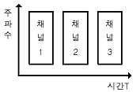
- 통계적 다중화
- 시분할 다중화
- 진폭 분할 다중화
- 주파수 분할 다중화
(정답률: 56%)
100. 반송파로 사용하는 정현파의 위상에 정보를 싣는 변조방식으로 일정 주파수, 일정 진폭의 정현파 위상을 2등분, 4등분, 8등분 등으로 나누어 각각 다른 위상에 "1" 혹은 "0"을 할당하거나 두 비트 혹은 세 비트를 한꺼번에 할당하는 디지털 데이터의 아날로그 부호화 방식은?
- ASK(Amplitude-Shift Keying)
- FSK(Frequency-Shift Keying)
- PSK(Phase-Shift Keying)
- Differential Manchester encoding
(정답률: 48%)